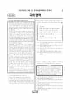

문제지

전국연합학력평가 · 시·도교육청 주관
2022년 9월 고2 학력평가 국어 1등급컷은 원점수 85점(추정), 표준점수 최고점은 150점입니다.
원점수 1등급컷은 공식 발표값이 아니라 EBSi·입시기관 값입니다. 등급별 값은 등급컷 표, 출처 구분은 데이터 원칙에 있습니다.

시험지를 먼저 풀어 보세요. 등급컷·표준점수·난이도는 흐리게 가려 뒀어요.
| 등급 | 원점수 | 표준점수 | 백분위 |
|---|---|---|---|
| 1 | 85 | 136 | 96 |
| 2 | 76 | 127 | 89 |
| 3 | 65 | 116 | 77 |
| 4 | 54 | 106 | 61 |
| 5 | 41 | 93 | 40 |
| 6 | 29 | 82 | 22 |
| 7 | 22 | 75 | 12 |
| 8 | 17 | 70 | 4 |
등급별 컷 · EBSi 원점수 추정 · 만점 100점
| 등급 | 표준점수 이상 | 인원(명) | 비율 |
|---|---|---|---|
| 1 | 136 | 9,443 | 4.24% |
| 2 | 127 | 15,357 | 6.89% |
| 3 | 116 | 28,835 | 12.95% |
| 4 | 106 | 36,068 | 16.19% |
| 5 | 93 | 45,072 | 20.24% |
| 6 | 82 | 39,918 | 17.92% |
| 7 | 75 | 24,192 | 10.86% |
| 8 | 70 | 16,291 | 7.31% |
| 9 | 54 | 7,566 | 3.4% |
시·도교육청 공개 자료
출처: 시·도교육청이 공개한 전국연합학력평가 성적 분석·통계자료(공개 자료 보기).
발행 기관: 시·도교육청(전국연합학력평가). 파일 위치: 이 사이트가 보관한 사본. 저작권은 발행 기관에 있습니다. 원본과 다르거나 게시 중단이 필요하면 연락처로 알려 주세요. 등급컷 출처 구분은 데이터 원칙에서 설명합니다.
막대 색은 역대 대비 난이도 · 진한 막대가 이 시험 · 막대를 누르면 그 회차로 이동
| 회차 | 1등급컷 | 표점 최고 | 1등급 표점 | 난이도 |
|---|---|---|---|---|
| 9월 학평2022년 고2이 시험 | 85 | 150 | 136 | 어려움 |
| 6월 학평2022년 고2 | 91 | 141 | 133 | 매우 쉬움 |
| 3월 학평2022년 고2 | 95 | 135 | 131 | 매우 쉬움 |
| 11월 학평2021년 고2 | 96 | 133 | 130 | 매우 쉬움 |
| 6월 학평2021년 고2 | 94 | 136 | 131 | 매우 쉬움 |
| 3월 학평2021년 고2 | 76 | 167 | 138 | 매우 어려움 |
국어는 교육청 채점 결과 1등급 구분 표준점수가 136점, 최고점이 150점(188명)이었습니다. 6월(1등급 133점, 최고점 141점, 761명)보다 어려웠습니다. 응시자는 222,742명이었습니다.
16~20번은 행위자가 모든 방안과 결과를 평가해 효용을 극대화한다는 포괄적 합리성과, 이를 비판하며 허버트 사이먼이 제시한 제한적 합리성을 다룬 지문이었습니다. 28~32번은 송신 측이 데이터마다 붙인 순서 번호에 따라 데이터를 보내고 수신 측이 응답 데이터를 돌려주는 통신 과정을 다뤘습니다.
33~37번은 같은 사진도 사람마다 다르게 인식하는 현상을 의식의 '지향성'으로 설명한 후설(가)과, 자전거를 한번 배우면 몸이 그 지식을 간직한 듯 느껴지는 현상으로 의식과 신체의 관계를 다시 묻는 (나)를 엮은 지문이었습니다.
문학은 달에 가서 천문대 일을 보겠다던 아버지를 떠올리는 조세희 「잘못은 신에게도 있다」(21~24번), 연탄가스를 소재로 한 김춘수 「겨울밤의 꿈」과 오규원 「개봉동과 장미」(25~27번), 왕명을 받아 관서 지방으로 떠나는 백광홍 「관서별곡」과 임춘 「동행기」(38~41번), 기생 어미가 재물이 떨어진 경룡을 죽이려 하는 「왕경룡전」(42~45번)이었습니다.
화법·작문은 칠교놀이를 소개한 발표(1~3번), '공직자 선거에 온라인 투표를 도입해야 한다'는 토론(4~7번), 공유 경제를 소개하는 기획 연재 글(8~10번)이었고, 문법은 능동문과 피동문을 다뤘습니다.